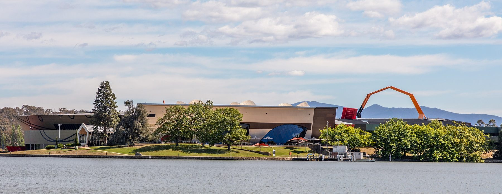

Unit 3 · Human remains · Lesson 7
Repatriation and Aboriginal Ancestral Remains
Why does bringing Ancestors home matter, and whose voices should we hear when we tell the story?
Aboriginal and Torres Strait Islander readers are advised that this lesson contains the names and words of people who have died. It has no images of Ancestral Remains or of the places where they were buried.
Year 11 Ancient History · Present with → or space · Read on a phone with R

Review · books closed · 6 minutes · press K for the timer
Six questions from Lessons 1–6
- Why does this unit say ‘mummified person’ and ‘Ancestral Remains’? Because these were people. Some museums (for example National Museums Scotland) now say ‘mummified person’ instead of ‘mummy’; ‘Ancestral Remains’ is a respectful term for the remains of Aboriginal and Torres Strait Islander people, and Communities may prefer others, such as ‘Ancestors’ or ‘Old People’.
- Why do some bog bodies keep their skin but have soft or missing bones? The bog’s acid dissolves the minerals in bone, while the cold, waterlogged, oxygen-poor peat preserves skin and soft tissue.
- Name one non-invasive and one minimally invasive method, each with a result from this unit. Non-invasive: X-ray or CT scanning, for example the arrowhead in Ötzi’s left shoulder, identified in 2001. Minimally invasive: a small sample for DNA, isotopes, radiocarbon or gut contents, for example Tollund Man’s last meal, a porridge of barley, pale persicaria and flax, and probably some fish (2021 study).
- Writing. Which opening better answers Lesson 5’s question, Assess the significance of human remains …, and why? (a) Tollund Man ate a porridge of barley, pale persicaria and flax, and probably some fish, shortly before he died.
(b) Human remains are most significant for understanding how individuals lived and died, but less significant, on their own, for understanding beliefs. (b). Assess asks for a judgement of how much: (b) says what remains are most and less significant for. (a) is accurate, but it judges nothing: it belongs later, as evidence. - What is Tacitus’s Germania 12 most useful as evidence of, and what is one limit? Roman views of Germanic customs in about 98 CE. It is weaker for bog bodies from other places or centuries: Tollund Man died about 500 years earlier, and Lindow Man lived in Britain, not Germania.
- Name three stakeholders in decisions about human remains, and one interest of each. Any three, for example: descendants and Communities (family, culture, belief) · scientists (research) · museums (care, display, education) · governments (law and heritage) · the public (learning).
Mark your own answers in a different colour. Which question did you find hardest?
Learning intentions and success criteria · 2 minutes
Today’s goals
- understand why the repatriation of Aboriginal Ancestral Remains matters
- analyse the perspectives of Communities, museums and scientists
- describe the return of Mungo Lady and Mungo Man to Country
- explain Community, museum and scientific perspectives on repatriation
- explain why repatriation is significant, in a paragraph
Syllabus outcomes: AH-11-05 analyses different types of sources for evidence to support a historical account or argument · AH-11-06 explains differing interpretations and representations of the past · AH-11-07 communicates historical understanding, applying historical knowledge, terms and concepts. Life Skills: AH-LS-08 uses sources to form conclusions about the past · AH-LS-09 identifies different interpretations of the past.
Note-making · the routine for the whole course
How to structure your notes
questions and key terms, written after
short phrases, arrows (→ leads to), abbreviations (ANU = Australian National University; AAG = Aboriginal Advisory Group)
- 1Rule up the page firstA cue column about a quarter of the page wide; title and date at the top; room for a summary at the bottom.
- 2Listen and look, then writeDon’t copy while a slide is being explained. Phrases, not sentences.
- 3Write your own notes at each ✎ checkpointThen compare with the model notes, one row at a time. Add what you missed in a second colour.
- 4Write the cue questions afterwardsUse exam verbs: explain, analyse, assess. To revise, cover your notes and answer the cues.
- 5Finish with a three-sentence summaryTwo checkpoints today: the return of Mungo Lady and Mungo Man · perspectives on repatriation. When you note a quotation, write who said it, and where and when it was published.
Feedback in action · 5 minutes · press K for the timer · your Lesson 6 paragraph comes back
Rewrite the move your feedback names
- 1opens with a judgement of degreeanswers the question with a qualification: to a large extent, only when …
- 2integrates three types of evidence, with provenancefor an ethical question: a named case, a named writer and a museum’s choice, each with who, when and where
- 3analyses what the evidence showsexplains how it supports the judgement, with a relating verb: suggests, reveals, indicates
- 4weighs a rival view before resolvinggives the other side its best evidence, then judges it, with modality
- 5resolves with a refined judgementon balance … and what the evidence cannot settle: not a summary, not a roadmap
- Read your strength and your next step.
- Find the sentence your next step points to and underline it.
- Rewrite it underneath, in a second colour, using that point on the checklist.
- Check: is it a real change in thinking or language, not just a neater copy?
Key vocabulary · add to the unit word wall
Words for returning Ancestors
| Returning the dead | Meaning |
|---|---|
| Repatriation | Returning remains or cultural material to the Community or country they came from. |
| Ancestral Remains | A respectful term for the remains of Aboriginal and Torres Strait Islander people; Communities may prefer others, such as ‘Ancestors’ or ‘Old People’. |
| Human remains | The bodies, or parts of the bodies, of people who have died — including bones, preserved tissue and ashes. |
| Consent | Permission given freely; the ancient dead cannot give it, which raises ethical questions. |
| Keeping place | A place where returned Ancestors are kept and cared for, instead of being reburied; some Traditional Owners wanted one that descendants and researchers could visit. |
| Whose decision? | Meaning |
|---|---|
| Custodian | A person or Community with the Cultural responsibility to care for Country, sites, Knowledge and Ancestors. |
| Country | The land and waters of an Aboriginal People, to which they are connected physically and spiritually. |
| ICIP | Indigenous Cultural and Intellectual Property — the rights of Aboriginal and Torres Strait Islander Peoples to control their Cultural Knowledge, Practices and Property. |
| Stakeholder | A person or group with an interest in a decision. |
| Significance | The importance of something, judged for a particular purpose. |
1 · Repatriation · I do — think aloud
Repatriation: why Ancestors are coming home
For more than 250 years ancestors and objects were removed from their communities and placed in museums, universities and private collections in Australia and overseas. During the 19th and 20th centuries, medical officers, anatomists, ethnologists, anthropologists, and pastoralists collected ancestors for ‘scientific’ research linked to explaining human biological differences.
Australian Government, Office for the Arts, “Indigenous Repatriation” (web page, checked 25 November 2026) · a government department describing the history behind its repatriation program
Who removed Ancestors, according to this source, and why?
Medical officers, anatomists, ethnologists, anthropologists and pastoralists, for ‘scientific’ research on human differences; the page adds that others removed Ancestors to trade or sell, and that many were then put on display as curiosities in collecting institutions. The quotation marks around ‘scientific’ suggest the government now questions that research.
Two ways of bringing Ancestors home
The Australian Government seeks the voluntary and unconditional return of Aboriginal and Torres Strait Islander ancestral remains (ancestors) held in overseas collecting institutions and with private holders.
Office for the Arts, “Indigenous Repatriation” · it also supports returns from eight major Australian museums
The Native American Graves Protection and Repatriation Act is a Federal law passed in 1990.
U.S. National Park Service, “Native American Graves Protection and Repatriation Act”, Frequently Asked Questions · NAGPRA applies to federal agencies and to museums that receive federal funds
Repatriation returns Ancestors to the Peoples they were taken from. It is the reverse of a long history of removal.
1 · Repatriation · I do — the timeline · text only, on purpose
Mungo Lady and Mungo Man: removal, return and reburial
Lake Mungo, in the Willandra Lakes Region of south-western NSW, is on the Country of the Barkandji/Paakantyi, Mutthi Mutthi and Ngiyampaa peoples, the Three Traditional Tribal Groups. Out of respect, this lesson has no images of the Ancestors or of the places where they were buried and reburied. Read more on official pages: the Aboriginal Advisory Group and Mungo National Park’s joint management program.
- 1968Geologist Jim Bowler found Mungo Lady’s remains at Lake Mungo. She had been cremated, then buried. An Australian National University (ANU) team took her to Canberra.
- 1974Bowler found Mungo Man, buried covered in ochre; he too was taken to the ANU. Both lived about 40,000 years ago (Unit 1, Lesson 3).
- 1960s–80sThey and 106 other Ancestors were removed from the Willandra Lakes between the late 1960s and the 1980s (NIT, 2022), “without permission from the three Traditional Owner groups” (SBS NITV, 2025).
- 1992Mungo Lady was returned to Lake Mungo, “after decades of campaigning by local communities” (SBS News, 2017).
- 2015The ANU agreed to hand back Mungo Man and the other Ancestors, and apologised. They waited at the National Museum of Australia.
- Nov 2017Mungo Man and about 100 other Ancestors travelled home from Canberra in an Aboriginal hearse; a ceremony at Lake Mungo welcomed them on 17 November.
- 2022The Australian Government approved a plan from NSW and the Aboriginal Advisory Group to rebury 108 Ancestors at 26 sites. Some Traditional Owners wanted a keeping place instead.
- 24 May 2022Mungo Lady and Mungo Man were reburied on Country while some Elders’ heritage application was still open. A Heritage NSW official said the state government “did not approve or conduct the burials” (NIT, 2022).
- Mar 2025The reburial of the other 106 Ancestors began. On 28 March the Federal Court dismissed a Mutthi Mutthi man’s challenge to the federal minister’s refusal to use her heritage-protection powers to stop it.
Between 1974 and 2017, what changed about who decided what happened to Mungo Man?
In 1974 scientists removed him without the Traditional Owners’ permission. By 2017 the university had apologised and the Traditional Owners took him home. What should happen next was still debated among the Traditional Owners themselves, as it had been before, with governments approving a reburial plan and a court reviewing a minister’s decision about it.
1 · Repatriation · I do — in the Traditional Owners’ published words
Why return matters: three Traditional Owners, November 2017
It’s been a long road for our people, a lot of our old people have passed on now that started this same fight that we’ve had. They’ve left us this legacy.
SBS NITV (NITV News), 15 November 2017, as Mungo Man’s journey home began
We know as Aboriginal people that we need to bring our ancestors home, and take care of them. We should be the custodians.
ABC News (Isabella Higgins), 17 November 2017, at Lake Mungo
[It is] so good to have him back after all those years he has been taken away, and we’ve been waiting all those years to get him back and I’m so glad he is back, to put him in his resting place.
ABC News (Isabella Higgins), 17 November 2017, at Lake Mungo
What reason for bringing the Ancestors home does each speaker give?
Pappin: the return comes from a long fight begun by old people who have since passed on: it is their “legacy”. Young: Aboriginal people have a responsibility to bring their Ancestors home and care for them, as their custodians. Slade: relief that he is back after being taken, so that he can be put to rest. Three people, three emphases: each speaks for themselves.
Notes checkpoint 1 of 2
The return of Mungo Lady and Mungo Man
2 · Perspectives · We do — supported reading · annotate as we read
One report, six voices: the day the journey home began
“Mungo Man: Australia’s oldest human begins his final journey home”
NITV News (SBS NITV), published 15 November 2017, as the Ancestors left Canberra · six extracts, in the order they appear · the reporter chose which words to print
We’re relieved at the moment, but at the same time it’s sad because we know we’re going through country, through other people’s country, and I know they’re all excited for us.
It gives me great satisfaction to see this occasion in the hands of the traditional people.
It’s been an endless struggle, a very emotional one for me. We’ve been working together with the Ngyampaa mob and the Mutti Mutti mob, we do have our disagreements, but coming together for something like this is very, very important to all of us.
I renew that apology today and look forward to the healing of our relationships this returning to country will bring.
… this sense of a moment of closure, but also an opening up on a way [to work] together in the future.
It’s so good to see so many people here to say goodbye to them. I hope we have a good journey home and thank you for looking after them.
Annotate each voice: who is speaking, and for whom? · perspective: what do they think about the return? · purpose: why say this, here, on this day?
Reports spell the Peoples’ names differently (Mutti Mutti, Ngyampaa); this sheet keeps the report’s spelling, and the lesson’s own words use Mutthi Mutthi and Ngiyampaa.
2 · Perspectives · We do — cold call a pair before each row
Perspective and purpose: who says what, and why?
| Speaker | Perspective: what they think about the return | Purpose: why say it, here (our inference) |
|---|---|---|
| Mary PappinMutthi Mutthi Elder | relief that the Ancestors are going home, and sadness; aware the convoy passes through other Peoples’ Country | to mark a long-awaited day for her People, and to acknowledge the Peoples whose Country they cross |
| Warren ClarkePaakantyi Elder | an “endless struggle”; the three groups “do have our disagreements”, but stood together for this | to show unity between the three groups for the return, while being honest that they differ |
| Joan SladeNgiyampaa Elder | glad to see so many people farewell them; thanks those who looked after them | to farewell the Ancestors and thank the people who cared for them |
| Richard Bakerthe university (ANU) | the removal caused harm; the university renews its apology and hopes for “healing” | to repair the university’s relationship with the Traditional Owners, in public |
| Mathew Trincathe museum (NMA) | a “moment of closure”, and the start of working together | to present the museum as a respectful partner in the return |
| Jim Bowlera scientist | satisfied that the occasion is now “in the hands of the traditional people” | as the man who found Mungo Man, to support his return publicly |
The reporter chose these words, so attribute each quotation to its speaker, and say where and when it was published: Paakantyi Elder Warren Clarke told SBS NITV on 15 November 2017 …
2 · Perspectives · We do — five years later · discuss in pairs, then cold call
After the return: reburial or a keeping place?
“Ancient remains to be reburied at Lake Mungo, ending decades-long campaign”
NITV The Point (SBS NITV), published 11 April 2022, after the federal government announced its approval of the reburial plan
We’re going to be taking them out of that room and letting their spirits go.
We’ve been talking about a keeping place for over 25 years. … The keeping place would then be for the custodians to link up the education and jobs for the community here and continue the stories …
Some Traditional Owners wanted a “keeping place” for the remains for scientific study and public access, while others believed they should be returned to where they’d come from and reburied.
So what did ‘the Traditional Owners’ want?
There is no single answer. Traditional Owners, within and across the three Traditional Tribal Groups, disagreed: Patricia Winch welcomed reburial; Michael Young wanted a keeping place. Name each speaker and the report; never write what ‘the Community’ felt.
Notes checkpoint 2 of 2
Perspectives on repatriation
3 · You do · Writing focus · I do 2 · We do 2 · then apply it in your paragraph
Writing focus: who acted, and with whose permission?
The active voice names who acted: an ANU team took her. The passive can hide the actor: she was taken. When who acted, and with whose permission, matters, use the active and name the person or body. Keep the passive only when your source names no actor, and never invent one.
Worked example · written for this lesson · from the timeline
1 · Passive, actor hidden: Mungo Lady was taken to Canberra in 1968.
2 · Active, actor named: In 1968 an Australian National University team took Mungo Lady to Canberra.
3 · Active, with whose permission: In 1968 an Australian National University team took Mungo Lady to Canberra, “without permission from the three Traditional Owner groups” (SBS NITV, 2025).
4 · Passive kept, because the source names no actor: In 1992 Mungo Lady was returned to Lake Mungo, “after decades of campaigning by local communities” (SBS News, 2017).
Which sentence is the most precise and respectful about who acted? Hold up A, B, C or D.
- AIn 2022 a plan was approved to rebury 108 Ancestors at 26 sites, after it had been drawn up and then put forward for approval.
- BIn 2022 the Australian Government approved a plan from NSW and the Aboriginal Advisory Group to rebury 108 Ancestors at 26 sites.
- CIn 2022 the Traditional Owners approved a plan from NSW and the Aboriginal Advisory Group to rebury 108 Ancestors at 26 sites.
- DIn 2022 the Australian Government approved a plan from NSW and the Aboriginal community to rebury 108 Ancestors at 26 sites.
A hides who approved the plan and whose plan it was. C names the wrong actor: the government approved it, and some Traditional Owners wanted a keeping place instead. D speaks for everyone: the plan came from a named body, the Aboriginal Advisory Group.
After your judgement, write your context sentence in the active voice about a different event from the worked example (for example 2015 or 2017): who removed or returned the Ancestors, and when (the timeline).
Attribute every view to the person or body that published it.
3 · You do · 12 minutes · press K for the timer · check first, then write
Your paragraph: why is repatriation significant?
Question: Explain why the repatriation of Aboriginal Ancestral Remains is significant.
- Open with your judgement: Repatriation is significant mainly because …, although …
- Use the return of Mungo Lady and Mungo Man: at least one date, and one Traditional Owner’s published words, attributed (name, People, report, date).
- Add one other perspective: the university, the museum or the scientist.
- Show that Traditional Owners have disagreed about what should happen next.
Use the printed timeline and your highlighted report. Frame: Repatriation is significant because … In [year], [who] [did what] … As [name], a [People] Elder, told [report] on [date], “…” This reveals … However, …
Compare Australia’s approach to repatriation with NAGPRA in the United States (Colwell, Lesson 6, and the two extracts on repatriation): what do the two show about whose voice decides?
Deconstruct the question · Verb explain: how and why it matters (cause and effect), and what mattered most · Topic why repatriation is significant · Limits Aboriginal Ancestral Remains: our case is Mungo Lady and Mungo Man · Do one paragraph that shows how and why: the main reason it matters first, then the links, dated (removal without permission → campaign → return → what it changed), every view attributed, and the disagreement
Check first: how will you attribute a view? Finish the sentence for one speaker.
As Mutthi Mutthi Elder Mary Pappin told SBS NITV on 15 November 2017, … · Paakantyi man Michael Young told ABC News in 2017 that …
3 · You do · 3 minutes · two students read theirs aloud, then compare
Compare: a model significance paragraph
The repatriation of Aboriginal Ancestral Remains is significant mainly because it returns Ancestors to the Peoples they were taken from, who have the Cultural responsibility to care for them, after removals made without their permission. In 1968 an Australian National University team took Mungo Lady from Lake Mungo to Canberra, and in 1974 Mungo Man, found there too, was taken to the university; both lived about 40,000 years ago, and their return in 1992 and 2017 resulted from a campaign that lasted generations: as Mutthi Mutthi Elder Mary Pappin told SBS NITV on 15 November 2017, “… a lot of our old people have passed on now that started this same fight …”. For the Traditional Owners quoted, return restores a duty of care; Paakantyi man Michael Young told ABC News on 17 November 2017, “We should be the custodians.” Repatriation also reveals a change in at least one institution that held them, since the university’s Professor Richard Baker renewed its apology and hoped for “the healing of our relationships”. Yet it did not settle the debate: Traditional Owners disagreed about reburial or a keeping place, both in 2017 and in the years that followed. Its significance therefore lies less in one outcome than in returning the Ancestors, and the decisions about their care, to their own Peoples rather than to the institutions that removed them.
Significance language · significant mainly because, resulted from, reveals
Attribution · name, role or People, report and date
Contestability · the disagreement, without speaking for anyone
Finish your notes If time · or at home
Summary: three sentences
- What happened to Mungo Lady and Mungo Man between 1968 and 2022?
- Why does their return matter, according to Traditional Owners quoted in the reports?
- Who decides what Cultural Knowledge is shared, and why can’t we say what ‘the Community’ wanted?
Mungo Lady and Mungo Man, about 40,000 years old, were removed from Lake Mungo in 1968 and 1974 without the Traditional Owners’ permission, returned in 1992 and 2017, and reburied on Country on 24 May 2022. Traditional Owners quoted in the reports describe the return as the result of a long fight begun by Elders who have since died, and as a duty to care for their Ancestors as their custodians. The Custodians decide what is shared, following ICIP protocols, and because Traditional Owners, within and across the three Traditional Tribal Groups, disagreed about reburial or a keeping place, each view must be attributed to the person who said it.
Check · hinge question · 2 minutes · hold up A, B, C or D
Who decides what Cultural Knowledge about Ancestral Remains is shared?
- AThe museum that holds them, under its policy
- BThe Custodians, following ICIP protocols
- CThe scientists who study them, for research
- DThe government, under heritage law
B. Cultural Knowledge belongs to its Custodians: they decide what is shared, following ICIP protocols. A: a museum may hold Ancestors, but holding them does not give it the Knowledge. C: scientists can study remains, but they cannot decide what Cultural Knowledge is shared. D: governments make heritage laws and approved the Willandra reburial plan, but Cultural Knowledge is not theirs to share.
Exit ticket · 4 minutes · before you leave
Two sentences
The return of Mungo Man was significant because … (name whose words you use)
We should not write what ‘the Community’ wanted, because …
1 · a reason tied to a named speaker and report, for example Michael Young’s “We should be the custodians” (ABC News, 2017), or the long campaign Mary Pappin described (SBS NITV, 2017). 2 · Traditional Owners, within and across the three Traditional Tribal Groups, have different views (reburial or a keeping place), so each view belongs to the person who said it.
Then check yourself against today’s three “I can” statements. Next lesson: bringing it together: a checkpoint on the whole unit, and a timed argument on two unseen sources.
Practice and review · 1 of 3 · true, false, justify
True or false? Justify your answer
- 1Mungo Lady and Mungo Man were returned to Lake Mungo at the same time. False — Mungo Lady was returned in 1992; Mungo Man in November 2017, with about 100 other Ancestors.
- 2The Ancestors were taken to the ANU with the Traditional Owners’ permission. False — SBS NITV (2025) reports they were removed without permission from the three Traditional Owner groups.
- 3All Traditional Owners agreed that the Ancestors should be reburied. False — some welcomed reburial (Patricia Winch, 2022); others wanted a keeping place (Michael Young, 2022).
- 4In the United States, a federal law passed in 1990 sets out how federal agencies and federally funded museums return Native American remains. True — NAGPRA: returns go to lineal descendants, Indian tribes and Native Hawaiian organisations.
- 5A museum that holds Ancestral Remains decides what Cultural Knowledge about them is shared. False — the Custodians decide what is shared, following ICIP protocols.
- 6A quotation in a news report is reliable evidence of what its speaker said, but the reporter chose which words to print. True — so attribute the words to the speaker, and name the report and its date.
Practice and review · 2 of 3 · writing
Attribute it, then judge it
Rewrite so that it is accurate and attributed: The Community wanted Mungo Man reburied.
Some Traditional Owners, such as Patricia Winch, chair of the Aboriginal Advisory Group, welcomed the reburial of the Ancestors, while others, such as Michael Young, wanted a keeping place (SBS NITV, 11 April 2022).
Finish: The return of Mungo Man in 2017 remains significant for … because …
The return of Mungo Man in 2017 remains significant for the institutions that held him, because the ANU renewed its apology for the distress the removal caused, which suggests that the university now treats collecting Ancestors without permission as a wrong to be repaired.
Compare Australia’s approach to repatriation with NAGPRA in the United States: what do the two show about whose voice decides?
Both approaches accept that Ancestors removed for study belong with their descendants, but they give those descendants different kinds of power. In the United States, NAGPRA is “a Federal law passed in 1990”: federal agencies, and museums that receive federal funds, must follow its processes for returning remains to lineal descendants and tribes, so a descendant’s claim is backed by law. Australia’s national approach is a government policy, set up in 2011: the Australian Government “seeks the voluntary and unconditional return” of Ancestors held overseas and supports returns from eight major Australian museums, so a return rests on cooperation as well as on the Custodians’ request. Yet the Willandra case shows that even when Ancestors come home, the question of whose voice decides is not settled by law or policy alone: the Traditional Owners themselves disagreed about reburial or a keeping place, and a court case followed. Whose voice decides is therefore answered first by descendants, and only then by the laws and policies that support them.
Rewrite in the active voice, using the timeline: In 2015 it was agreed that Mungo Man and the other Ancestors would be handed back, and an apology was made.
In 2015 the ANU agreed to hand back Mungo Man and the other Ancestors, and apologised.
Practice and review · 3 of 3 · cover your notes and answer from memory
Quick checks
- Explain what repatriation is and why it happens. Returning remains or cultural material to the Community they came from. For more than 250 years Ancestors were removed to museums, universities and private collections, for ‘scientific’ research or for sale; repatriation reverses that removal.
- Describe how Mungo Lady and Mungo Man were removed and returned. Found at Lake Mungo in 1968 and 1974 (about 40,000 years old) and taken to the ANU without the Traditional Owners’ permission; returned in 1992 and November 2017, after decades of campaigning.
- Outline what happened after 2017. In 2022 the Australian Government approved a plan to rebury 108 Ancestors; on 24 May 2022 Mungo Lady and Mungo Man were reburied on Country while some Elders’ application was still open, and a Heritage NSW official said the state government did not approve or conduct it. The other Ancestors’ reburial began in March 2025, and a court challenge was dismissed.
- Explain why return matters, in the Traditional Owners’ published words. Mary Pappin (SBS NITV, 2017): the return comes from a long fight begun by old people who have since passed on, their “legacy”. Michael Young (ABC News, 2017): “We should be the custodians.” Joan Slade (ABC News, 2017): he is home, “to put him in his resting place”.
- Explain the university’s and the scientist’s perspectives in 2017. The ANU renewed its apology and hoped for healing; Jim Bowler, who found Mungo Man, was glad the occasion was “in the hands of the traditional people”.
- Explain why we cannot say what ‘the Community’ wanted. Traditional Owners, within and across the three Traditional Tribal Groups, disagreed: some welcomed reburial, others wanted a keeping place. Each view must be attributed to the person who said it.
- Who decides what Cultural Knowledge about Ancestral Remains is shared? The Custodians, following ICIP protocols.
Sources and credits
Where everything comes from
News reports, quoted briefly with each speaker named (not linked, because their pages show photographs; wording checked 25 November 2026): NITV News (SBS NITV), “Mungo Man: Australia’s oldest human begins his final journey home”, 15 November 2017 · SBS News (AAP), “Mungo Man home to original resting place”, 17 November 2017 · Isabella Higgins, “Mungo Man returned to ancestral home where he died 40,000 years ago”, ABC News, 17 November 2017 · SBS NITV, “Mungo Man finally home with his ancestors”, 18 November 2017 · NITV The Point (SBS NITV), “Ancient remains to be reburied at Lake Mungo, ending decades-long campaign”, 11 April 2022 · National Indigenous Times (AAP), “Elders reveal distress at sudden, secret Mungo Man burials”, 1 June 2022 · SBS NITV (AAP), “Burial of Mungo Man and Mungo Lady can continue, court rules”, 28 March 2025 · Sam McKeith (AAP), “Court tosses last-ditch bid to block Mungo Man reburial”, National Indigenous Times, 29 March 2025. © the publishers.
Official pages: NSW Environment and Heritage, “Willandra Lakes ancestral remains reburial” and “Willandra Lakes Region World Heritage Aboriginal Advisory Group”; NSW National Parks, “Mungo National Park joint management program”; Australian Government, Office for the Arts, “Indigenous Repatriation”; U.S. National Park Service, “Native American Graves Protection and Repatriation Act”, Frequently Asked Questions (public domain).
Court decision: Kelly v Minister for the Environment and Water [2025] FCA 264 (Federal Court of Australia, 28 March 2025), as reported above. Dating of Mungo Lady and Mungo Man: J. M. Bowler et al., Nature 421 (2003), as in Unit 1, Lesson 3.
Review answers: Lessons 1–6 of this unit and their sources, including the South Tyrol Museum of Archaeology (iceman.it); N. H. Nielsen et al., Antiquity 95 (2021) and Radiocarbon 60 (2018); Tacitus, Germania 12, trans. A. J. Church and W. J. Brodribb (1868, revised 1877).
Teacher resource: Lake Mungo and Australia’s Ancient Past (class notebook), checked against the sources above. The model paragraph, model notes, examples and summary were written for this lesson.
Outcomes and content: NSW Education Standards Authority (NESA), Ancient History 11–12 Syllabus (2024). © NESA.
This lesson contains the names and words of Aboriginal people who have died. It shows no images of Aboriginal Ancestral Remains or of the places where they were buried or reburied. The Custodians decide what is shared, following ICIP protocols.
- The National Museum of Australia, Canberra (2019) · Photo: Dietmar Rabich / Wikimedia Commons · CC BY-SA 4.0 · source
,_National_Museum_of_Australia_--_2019_--_1709.jpg){kind=link}
Openly licensed, resized and cropped for the web; shared under the licence shown.